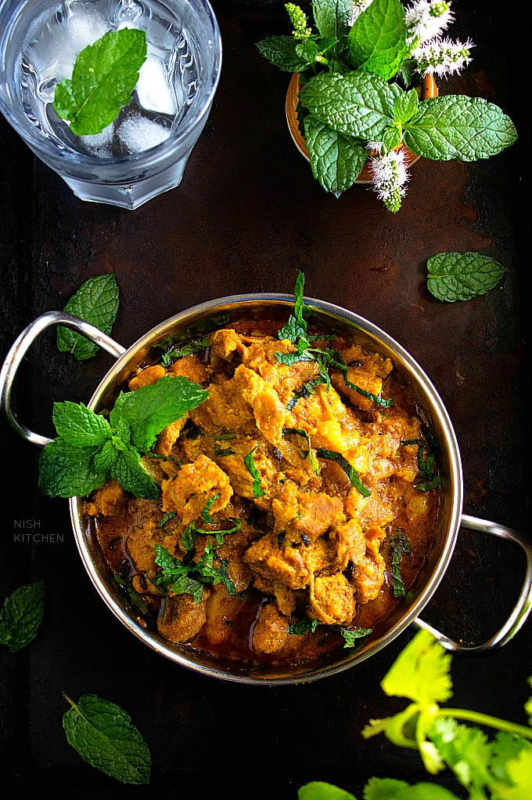

Pork Curry

Easy to make curry with tender pork shoulder. Beautiful.
Ingredients
- 1 kg pork shoulder or leg, diced
- ½ cup chopped onions
- 3 garlic cloves chopped
- 1 inch fresh ginger chopped
- ½ teaspoon ground turmeric
- 1 tablespoon ground coriander
- 1 tablespoon garam masala
- 1 teaspoon red chili powder/li>
- ¼ cup coconut slices
- Place pork, sliced onions, garlic, ginger, ground turmeric, ground coriander, garam masala, red chili powder and coconut slices (if using) in a pressure cooker. Toss to coat pork in the ground spices. Season with salt. Cover the pressure cooker, and cook for about 5-6 whistles.
- Alternatively, you can cook pork over the stove top. Place all the ingredients in a large pan. Pour in 1 ½ cups water. Cook over medium-high heat for about one hour or until pork is tender and cooked through.
- To make the tempered spices, heat oil in a large frying pan over medium-high heat. Stir fry bay leaves, cinnamon stick and fennel seeds.
- Add onions, and sauté, stirring occasionally, for about 2-3 minutes or until browned. Add ground turmeric, ground coriander, garam masala and red chili powder. Stir fry for 1 minute.
- Add enough water (½ -¾ cup) to make thick sauce. Season with salt. Bring to a boil. Reduce heat and simmer for 3-4 minutes.
- Add cooked pork and chopped coriander (cilantro) leaves. Simmer for another 3-4 minutes.
Home